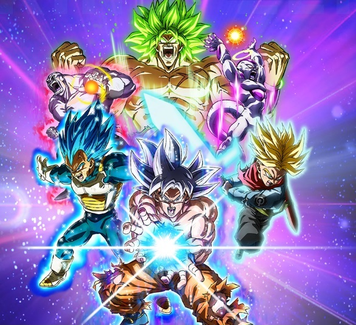

Dragon Ball Sparking! ZERO
Dragon Ball Sparking! ZERO

Descripción
Dragon Ball Sparking! ZERO es el sucesor espiritual de la legendaria serie Budokai Tenkaichi. Cuenta con una enorme cantidad de personajes y combates espectaculares.
Características
- Más de 180 personajes.
- Transformaciones en tiempo real.
- Batallas 3D.
- Modos historia y multijugador.
Trailer Oficial de Dragon Ball Sparking! ZERO
Sitio Oficial de Dragon Ball Sparking! ZERO